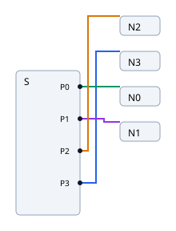
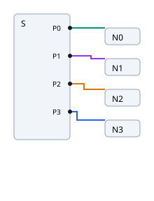
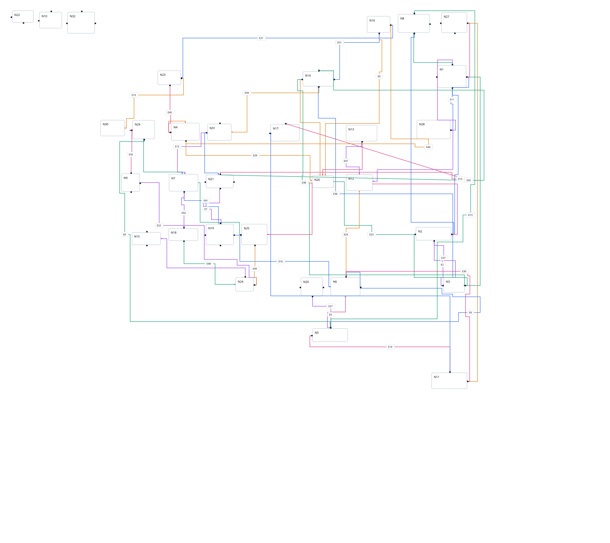
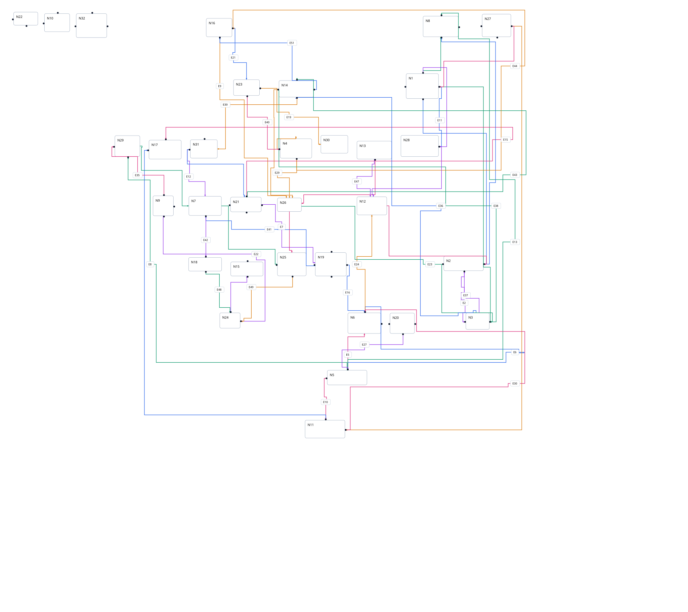
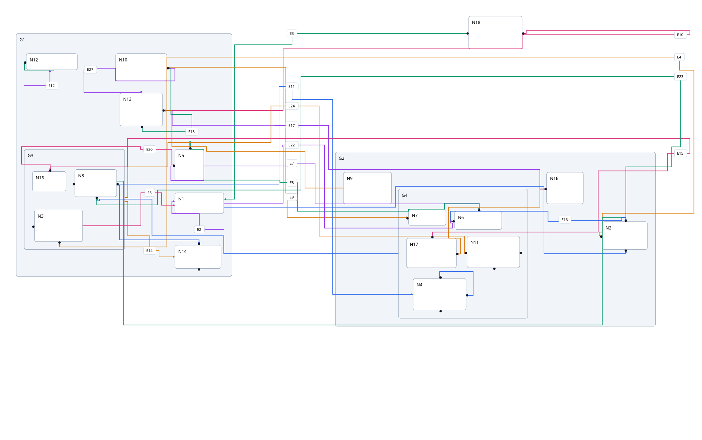
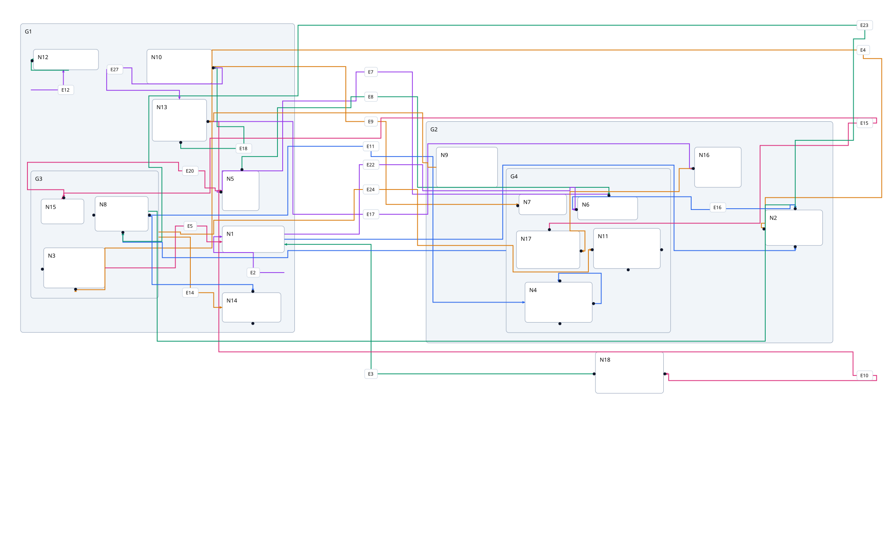

Matching native before / after
Fixed-port fan · same input, dimensions, scale, viewport
Before main 81363b4

After ceef0b1

Seed 196613, graph 5 · identical input, direction, dimensions, scale, viewport
Before 015b0b5

After ceef0b1

Seed 130363, graph 8 · identical input, direction, dimensions, scale, viewport
Before 015b0b5

After ceef0b1
